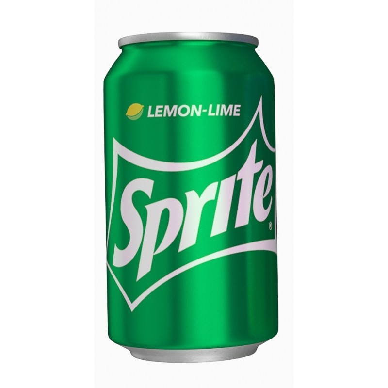

$5.30
1. Refrescante: Sprite tiene un sabor cítrico y refrescante, lo que la convierte en una opción popular para calmar la sed.
2. Sin cafeína: Al no contener cafeína, Sprite es una alternativa para aquellos que buscan una bebida sin estimulantes.
3. Versatilidad: Puede disfrutarse sola o como base para cócteles y mezclas, lo que la hace versátil y adaptable a diferentes preferencias de consumo.
4. Baja en calorías: En comparación con algunas bebidas azucaradas, Sprite baja en calorías, lo que puede ser atractivo para quienes buscan opciones más saludables.
5. Transparencia y ausencia de colorantes: El hecho de ser una bebida sin colorantes artificiales y tener un aspecto transparente puede ser atractivo para aquellos que prefieren productos más naturales.